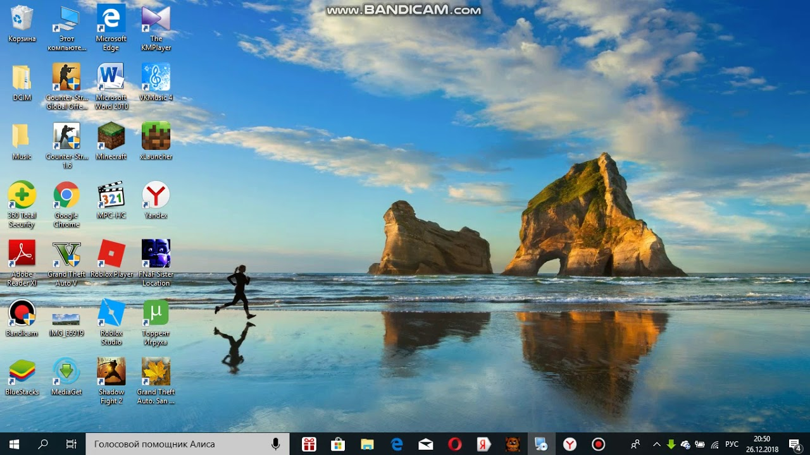

Cкачать торрент бесплатно на русском языке | Программа клиент uTorrent
 Что такое торрент? Скачать uTorrent О клиенте uTorrent uTorrent для windows uTorrent для android uTorrent для ios uTorrent для mac uТorrent для linux uTorrent для windows phone Старые версии uTorrent FAQ Общее Разное Использование uTorrent Возможности uTorrent Установка Сеть Устранение неполадок Сообщения об ошибках Несовместимое программное обеспечение ДокументацияТоррент клиент uTorrent
Torrent технология — быстрый 🚀 и популярный способ загрузки любых файлов из Интернета, которая уже многие годы подряд подтверждает качество своей работы. Скачивание через Интернет на высокой 💥 скорости обеспечивает торрент клиент – удобная программа, в которой закачка фильмов, книг, картинок и т.д. начинается после быстрого запуска специального ярлыка. Она загружает файл не с одного сайта полностью, а частями от пользователей, раздающих его посредством своего загрузчика.
Скачать торрент Весия для Windows uTorrent stable (3.5.5 build 45359) Версия: 3.5.5 (build 45365) Лицензия: Бесплатно Рейтинг: 4.2 из 475 Разработчик: BitTorrent, Inc. Страна: США Система: Windows XP, 7, 8, 10 Язык программы : Русский Размер: 2.17 MB Дата релиза: 03.01.2020 Старые релизы торрента для windows x32 для windows x64 linux mac android windows phone ios portable Pro (Plus) Control Web Remote AzTorrent BitTorrent qBittorrent Transmission MediaGet Halite FrostWire Deluge BitSpirit Tixati Zona BitComet Vuze FlashGet Shareaza Bitlord ComboPlayer Bittornado Tribler Показать всеРейтинг торрентов 2020
В рейтинг вошли лучшие торренты для скачивания музыки, кино, игр с помощью torrent технологии. ТОП Разработчик Лицензия Магнет - ссылки Каталог контента Запуск видео до завершения закачки Реклама Поддерживаемые платформы Русский язык uTorrent BitTorrent Inc. Бесплатно Да Нет Нет Да Win, Linux, MacOS, Android Да AzTorrent AzTorrent TM Бесплатно Да Нет Нет Нет Win Да BitTorrent BitTorrent, Inc Бесплатно Да Нет Нет Нет Win, Linux, MacOS, Android, iOS Да qBittorrent FossHub Team Бесплатно Да Нет Нет Нет Win, Linux, MacOS Да MediaGet MediaGet TM Бесплатно Нет Да Нет Да Win, Android Да Смотреть таблицуПреимущества
Не перегружает систему, быстро работает, не детектится антивирусами Отличается простотой использования (можно загрузить с официального сайта) Множество функций торрента не обязывает их использование Каждый пользователь может выбирать для себя наиболее нужные и удобные опции в соответствующем окне Отсутствие нужды в сложных настройках после установки Скорость зависит от интернет-соединения, клиент выжимает по максимуму, при этом позволяет параллельно пользоваться интернетом Надежность работы и управления – одновременно может быть запущено от 50 до 150 закачек Присутствует встроенный плеер с возможностью воспроизведения до полной закачки фильма. Совместимость со всеми браузерамиНедостатки
В более ранних выпусках клиент часто "вылетал" Плохо работает встроеный в торрент медиаплеер Имеется реклама, но есть возможность ее отключить Отсутствие простой инструкции при ошибках Разработчик попадался на майнинге с помощью компьютеров пользователей Отсутствие функции библиотеки Нет возможности сообщить об ошибке из интерфейса Скачать uTorrent stable (3.5.5 build 45826) Большой набор опций и функций, удобный интерфейс, минимальное потребление ресурсов системы сделало его максимально практичным среди торрентов. За использование продукта плата не взымается, имеется реклама. Пользователи могут самостоятельно подбирать нужную скорость раздачи и скачивания, автоматизировать процессы, выбирать нужный перевод интерфейса. далее что такое торент? как закачать торрент? почему торент не качает? как установить торрент? как настроить как пользоваться торрентом? как русифицировать как создать торент для раздачи другу как скачать фильм через торент пошаговая инструкция как открыть торент на компьютере как закачать торент файл без торента как сбросить настройки торрента по умолчанию что значит "раздается в торенте" как установить торент на андроид как убрать рекламу как увеличить скорость почему не устанавливается почему торрент не качает рейтинг программ для скачивания отзывы и комментарии Все категорииВопрос-Ответ
По клику на кнопку с расширением .apk не смог найти окна загрузок на телефоне.
В этом используйте загрузку файла с google play
Сложна ли настройка программы?
Благодаря удобному интерфейсу, настройка приложения не займет много времени. В большинстве случаев она вообще не нужна. Просто устанавливайте программу и начните делиться фильмами и музыкой.
Как связаться с разработчиком если у меня не PRO версия?
В free торрент программе предусмотрена обратная связь, если возникли проблемы, можно написать разработчику. Найдите соответстующую кнопку в разделе "справка"
Существует ли отдельная версия программы только с английском или украинским языком?
Английский, украинский языковой пакет не собирался отдельно, поэтому лучше автоматически скачивать обновление, где все эти переводы собраны воедино.
Можно ли управлять программой удаленно?
Удаленное управление - полезная функция компьютера которая реализована в соответствующем приложении.
Не удалось найти скриншоты и дистрибутив версии 1.0.1 на популярных трекерах. У вас есть такой архив?
Увы, наличие прошлогодних релизов на трекерах не означает, что ими можно безопасно пользоваться. Поиск нужного дистрибутива лучше осуществлять на проверенном ресурсе, например на нашем портале. Все архивы собраны на странице "Старые версии".
Почему в некоторых подобных программах предлагают установку Яндекс браузера?
Это выбор пользователя. Никто не заставляет ставить яндекс браузер, вы можете нажать кнопку отказа и пропустить этот этап при инсталяции.
Некоторые онлайн-кинотеатры требуют денег за просмотр фильма выставляя неофициальный счет или просят поставь лайк / нажми на рекламу / смотрите наш канал.
Это главное отличие Российских трекеров от зарубежных. Процесс просмотра фильма на сайте может доставить массу неудобств. Именно поэтому, миллионы людей пользуются удобной утилитой уторрент. В нем удобно управлять загрузками с максимальной скоростью отдачи, приема и передачи любых данных.
Какие полезные функции стоит использовать для обмена данными?
Среди инструментов разработчика много полезного. Можно добавить ограничения на отдачу или скорость загрузки. Настроить удаленный доступ. Отключить антивирус, что позволит не загружать диск.
Обладает ли утилита функцией сохранения потокового видео?
Нет, такая возможность есть только у видеоплееров типа VLC и KMPlayer
web-интерфейс не продуман, не понимаю где поле для magnet-ссылок?
Утилита имеет понятный интерфейс. Если у вас современный браузер, достаточно кликнуть по магнитной ссылке и одобрить запрос браузера на передачу данных торренту.
Почему некоторые файлы не проходят проверку антивирусом? Зачастую даже стандартный установщик детектит Касперский другие подобные утилиты.
Необходимо сразу разбираться, почему файлу free установщика присвоен детект. Иногда это происходит из-за наличия рекламы зашитой в инсталятор. На это нужно время, и его зачастую просто нет.
Зачем нужен протокол P2P, мне кажется качать торрентом проще.
Сетевой протокол (P2P) служит для кооперативного обмена фильмами и множества других видеофайлов. Это и есть технология torrent.
Если в писание страницы не входит спойлер о фильме, почему бы его не зашивать в сам torrent?
У сайтов кинотеатров много страниц и трафика, они не всегда успевают заполнять необходимую информацию. Много раз это обсуждалось среди пользователей утилиты. Используйте встроенную функцию поиска, не пренебрегайте настройками в интерфейсе. Конечно, статус каждого файла не позволяет отображать спойлер, но с помощью поиска можно увидеть краткое описание. В этом и есть преимущество utorrent перед другими подобными продуктами.
Среди рейтингов за 2019 год часто отсутствует utorrent. Почему?
Ничего удивительного, встречаели такое много раз. Такое всегда происходит когда нужно продвинуть свой продукт. Клиент выполняет работу любого типа по обмену данными не требуя взамен больших операционных издержек. Пользуйтесь и не обращайте внимания на ангажированные рейтинги.
СвернутьЗагрузки
Windows Mac iOS Linux Android Windows Phone скачать utorrent stable 3.5.5 (build 45359) (2.17 MB) 26.09.2019Последняя стабильный загрузчик, включает в себя все самые необходимые функции и высокую производительность. utorrent 2.2.1 (390.37 KB) 25.05.2011
Наиболее стабильно работает на Win 7 x86. Плохо работает 64 битных системах.
utorrent 2.0.4 (320.87 KB) 25.08.2010
Популярный загрузчик 2010 года. Компактный и занимает очень мало места на диске. Без встроенной рекламы utorrent 1.8.5 (282.80 KB) 25.11.2009
До сих пор актуальный вариант и пользуется спросом, в нем нет никакой рекламы, и уменьшении скоростных показателей. Если вы до сих пор пользуетесь Win XP - это то что Вам нужно.
Для установки нажмите Win+R, введите туда %AppData%\uTorrent, и в открывшейся окно поместите utorrent.lng
language пакет для 3.5.5 66 переводов + русский (1.30 MB) 14.11.2018 language пакет для 2.2.1 53 перевода + русский (754.15 KB) 15.04.2011 language пакет для 2.0.4 53 перевода + RUS (631.66 KB) 25.08.2010 language пакет для 1.8.5 RUS (583 KB) 03.12.2009
Один из первых подобных пакетов для клиента. utorrent stable 1.8.7 по ссылке сборка 43742 (4.06 MB) Eng 20.04.2017
Загрузчик для устройств от apple, Mac OS. Загрузить language пакет для 1.8.7 сборка 43742 (66 переводов + русский) (598.21 KB) 09.12.2017
Для установки поместите utmac.lng in /Applications/uTorrent.app/Contents/MacOS/
Загрузчики из архива для Mac OS
Загрузить utorrent stable 1.8.3 сборка 29330 (3.41 MB) Eng 15.11.2014Загрузчик для устройств от apple на операционной системе Mac OS. Загрузить utorrent Stable 1.6.5 With PPC Support сборка 27624 (2.69 MB) 25.07.2012 utorrent alpha 0.9.3 по ссылке (1.47 MB) utorrent 1.9.1 по ссылке (3.49 MB) 04.09.2014 utorrent Remote версии 1.0.4 Требуется iOS 4.0 и выше (578 KB) 18.10.2012
С его помощью можно управлять клиентом который установлен у вас дома.
uTorrent Server
Загрузчик для пользователей Linux.for Debian 7.0 32-bit 15.05.2014 for Debian 7.0 64-bit 15.04.2014 for Ubuntu 13.04 32-bit 15.04.2014 for Ubuntu 13.04 64-bit 15.04.2014 for Debian 6.0 32-bit 15.10.2013 for Debian 6.0 64-bit 15.10.2013 for Ubuntu 12.04 32-bit 15.04.2014 for Ubuntu 12.04 64-bit 15.04.2014 alpha 3.0 29.05.2012 (только для процессоров Intel и AMD) alpha 3.0 64 bit 29.05.2012 Актуально для различных устройств под управлением андроид 4.1 и выше (RUS)
stable 3.43.328 build 42612 (13.0 МБ) 30.06.2017 Актуально для различных устройств под управлением андроид 2.1 и выше
stable 3.13.198 build 40913 (7.91 МБ) 07.01.2016 Remote 1.0.20110929 (270 мб) 23.12.2013
Для управления приложением с мобильного телефона.
Загрузчики из архива для операционной системы android
stable версии
3.5.190 (7.78 Мб) 14.06.2015 3.4.189 (7.78 Мб) 11.06.2015 3.0.185 (7.70 Мб) 26.05.2015beta версии
2.113.169 20.05.2015 2.12.43 20.07.2014 2.10.43 16.06.2014 2.09.40 30.05.2014 2.04.35 31.03.2014 1.21.29 19.12.2013 1.20.28 02.12.2013 1.18.26 07.11.2013 1.17.25 31.08.2013 1.16.23 09.07.2013 1.15.22 11.06.2013 1.13.20 01.03.2013 Remote beta 1.3.0.0 15.03.2013Приложение создано для управления загрузчиком с мобильных устройств.
Для открытия архивов вам потребуется архиватор по типу WinRar, 7-Zip, WinZip
пароль к архивам: utorrentПомощь специалистов
Остались вопросы?
Задайте их в форме ниже и мы с удовольствием ответим на них © 2009-2021 µTorrent является товарной маркой компании BitTorrent, Inc. uTorrentПРИСУТСТВУЕТ
ПЛАТНО
УСЛОВНО-БЕСПЛАТНО
СКАЧАТЬBitTorrent, Inc
США, Калифорния, Сан Франциско
ПРИШЛО ВРЕМЯ ВЫБРАТЬ ТОРРЕНТ-КЛИЕНТРЕКЛАМА ВНУТРИ ТОРРЕНТА
ПОДДЕРЖКА ПОЛЬЗОВАТЕЛЕЙ
ЛИЦЕНЗИЯ НА ПРОГРАММНОЕ ОБЕСПЕЧЕНИЕ
перейти на сайт aztorrent.ru АзъTorrentОТСУТСТВУЕТ
БЕСПЛАТНО
БЕСПЛАТНО
СКАЧАТЬООО “АЗТОРРЕНТ”
Россия, Санкт-Петербург